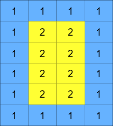
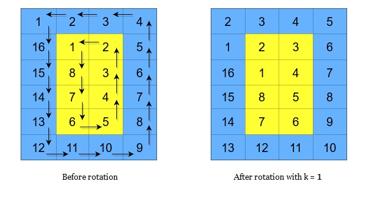
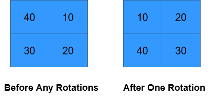
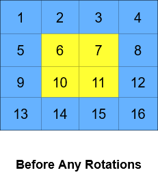
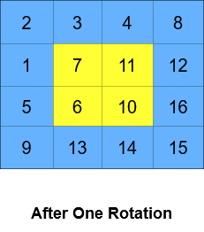
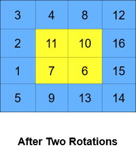

| Category | Difficulty | Likes | Dislikes |
|---|---|---|---|
| Algorithms | Medium | 265 | 278 |
array | matrix | simulation
You are given an m x n integer matrix grid, where m and n are both even integers, and an integer k.
The matrix is composed of several layers, which is shown in the below image, where each color is its own layer:

A cyclic rotation of the matrix is done by cyclically rotating each layer in the matrix. To cyclically rotate a layer once, each element in the layer will take the place of the adjacent element in the counter-clockwise direction. An example rotation is shown below:

Return the matrix after applying k cyclic rotations to it.
Example 1:

Input: grid = [[40,10],[30,20]], k = 1
Output: [[10,20],[40,30]]
Explanation: The figures above represent the grid at every state.Example 2:



Input: grid = [[1,2,3,4],[5,6,7,8],[9,10,11,12],[13,14,15,16]], k = 2
Output: [[3,4,8,12],[2,11,10,16],[1,7,6,15],[5,9,13,14]]
Explanation: The figures above represent the grid at every state.
Constraints:
m == grid.lengthn == grid[i].length2 <= m, n <= 50m and n are even integers.1 <= grid[i][j] <= 50001 <= k <= 109